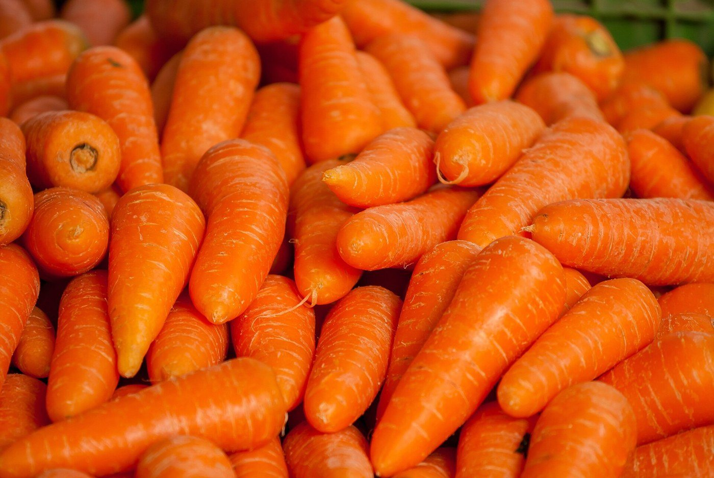
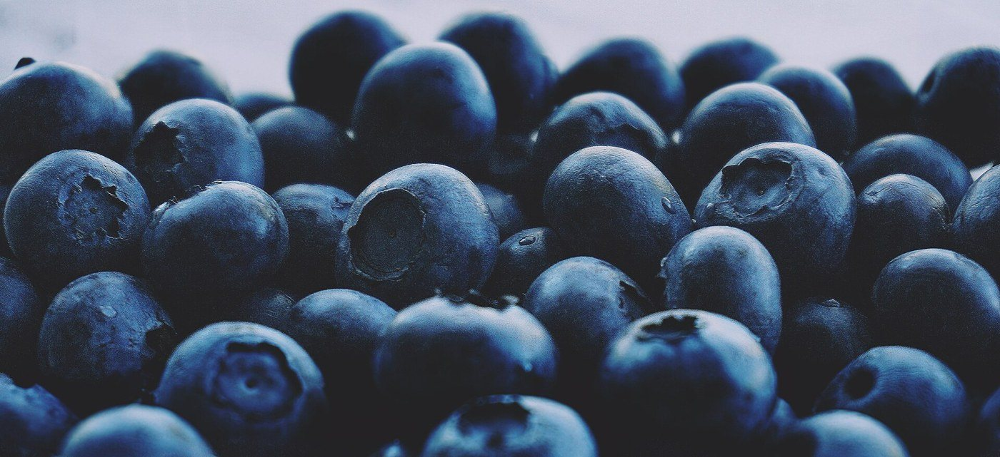
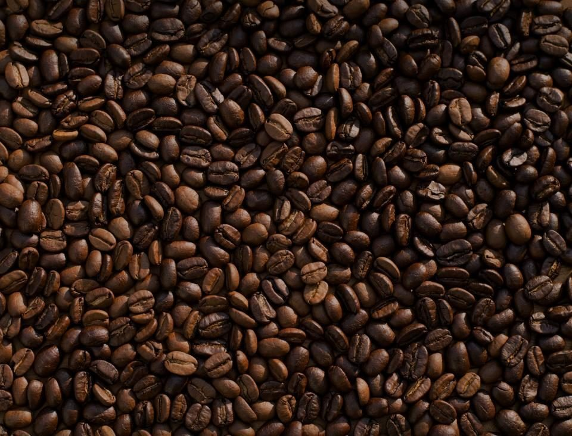
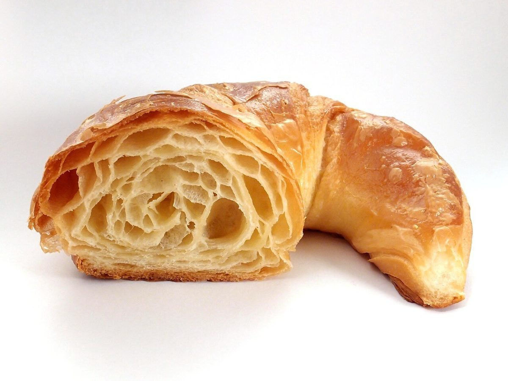
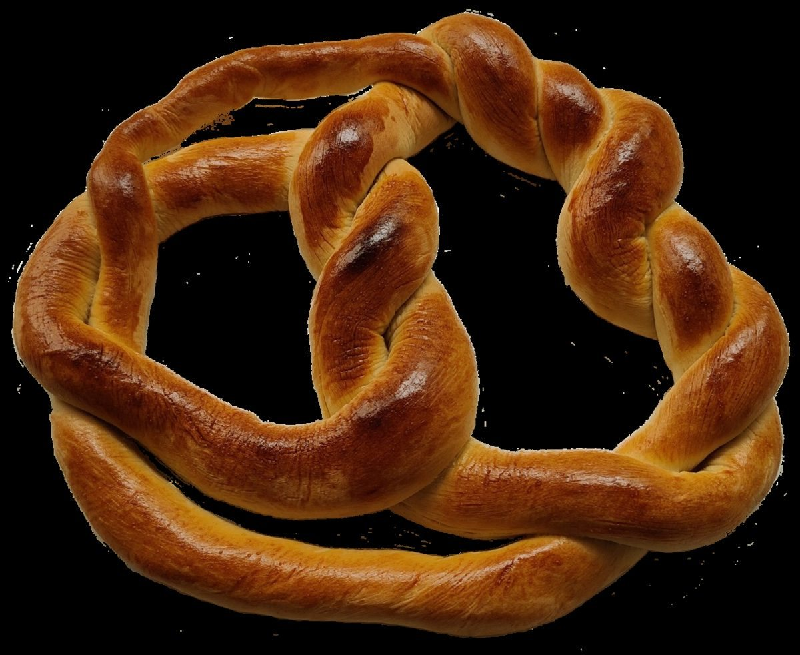

3 / メニュー
メニュー
お品書きと価格は準備中です。確認できた内容から順に載せていきます。下の写真はフリー素材のイメージで、お店のメニューではありません。
お品書き
準備中の欄
| 区分 | 内容 | 価格 |
|---|---|---|
| お品書き 1 | 準備中 | 準備中 |
| お品書き 2 | 準備中 | 準備中 |
| お品書き 3 | 準備中 | 準備中 |
| お品書き 4 | 準備中 | 準備中 |
写真(イメージ)
アーチ形の窓、四枚







写真はイメージです。お店のメニューや提供内容を示すものではありません。